<div class="grid-container">
  <div class="grid-y main-grid">
    <header>
      <h1>SNG</h1>
      <h6>Simple Noise Generator</h6>
    </header>
    <div id="audio-background" class="cell audio-buttons">
      <div class="grid-x">
        <audio id="audio" loop></audio>
        <div class="cell small-12">
          
          
          
        </div>
        <div class="cell small-12">
          
          
          
        </div>
        <div class="cell small-12">
          
          
          
        </div>
        <div class="cell small-12 stop-button">
          <button onclick="stopAudio()"><h6>stop</h6></button>
        </div>
      </div>
    </div>
  </div>
  <footer>
    <div class="grid-x footer">
      <div class="cell what_is-title small-12">
        <div class="what_is-container">
          <h6>What is Simple Noise Generator?</h6>
          <hr>
        </div>
      </div>
      <div class="cell what_is-text small-12">
        <div class="what_is-container">
          <p>Simple noise generator is a minimalistic player for your favorite noise.
            There are 9 different noises you can choose from. Just press on one
            of the Icons and the noise will play automatically. If you have
            trouble focusing on your homework, sleeping at night or you need
            something to calm down, this website is for you.
          </p>
        </div>
      </div>
      <div class="cell license small-12">
        <div>Icons made by <a href="http://www.freepik.com" title="Freepik">Freepik </a> from
          <a href="https://www.flaticon.com/" title="Flaticon">www.flaticon.com </a> is licensed by
          <a href="http://creativecommons.org/licenses/by/3.0/" title="Creative Commons BY 3.0" target="_blank">CC 3.0 BY</a>
        </div>
      </div>
    </div>
  </footer>
</div>
